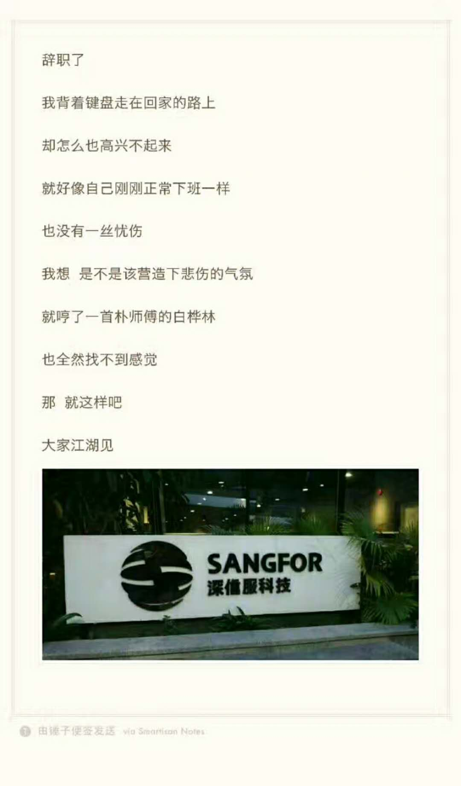
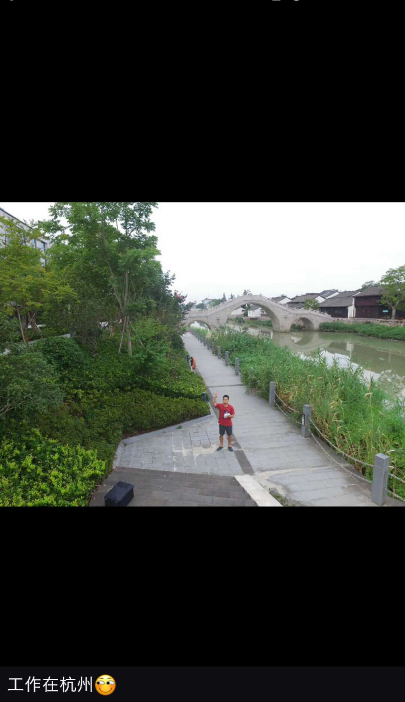

2017年，真是折腾的一年
换了两次工作，并且又换了一座城市；期间忙碌于「辞职 - 找工作 - 入职」的循环之中，技术上没有多大长进，大数据、人工智能和区块链三大技术断断续续学了些皮毛，只能算是增长了些见识吧～好在最后找到了自己喜欢的节奏，生活习惯上也有了很大的改变，体重回到了久违的65kg～
工作篇
今年3月份离开深信服，4月份便入职了华为，本想在华为多待些日子，但最后只用了4个月时间便耗尽了耐心，8月底就匆匆赶到杭州在数澜科技工作了，真是够折腾的。
离开深信服

3月底离开了深信服，这是我人生中的第一次离职。深信服是我服务的第一个公司，从2013年2月份开始实习算起的话，我在这里工作了足足4年。4年时间里我学到了不少知识，也认识了很多可爱的同事和朋友。我从一个连计算机二级考试都考不过的菜鸟变成了什么都懂一点的软件测试「高级设计师」，从傻不拉几的理想主义青年变成了「骚气十足」的理想主义中年，也见识了公司从1000多人发展到3000多人的历程。最后选择了离开，一方面是由于自己不太喜欢管理上的一些问题，另一方面也是自己感觉在人工智能的大势下部门的桌面云业务发展方向有些跟不上时代。第一份工作，由衷感谢深信服。
路过华为
4月份入职深圳华为，先是去上海参加了一周公司所谓的「大队」培训，然后回深圳入职华为公有云部门，参加了又一个培训，叫「三营」培训（跟解放时期的叫法一样）。在华为我见识到了各种只有超大公司才具备的「正规」，比如各种「电子流」、培训交流以及邮件通知等等，及其正规（虽然深信服3000多人已经算是大公司了，但华为毕竟18万人，量级上差一些，管理方式上也差一些），同时也体会到只有超级大公司才会有的管理混乱以及及其低下的工作效率。最后觉得这里并不是我之前想象的那么合适，待到8月底就离开了。
来到杭州数澜

深圳的房价太高，在一两年内怎么看都没有希望买房，就换到杭州发展吧。数澜科技是我在一个测试论坛的招聘帖子里看到的，查了下公司的背景后觉得公司还可以，成立1年多，团队实力挺不错，就跟发招聘帖子的人（当时的测试组负责人）联系上了，经过几次面试后公司的CTO正好在广州出差，我们便约好在广州火车站附近面谈一下。
这个CTO给我留下了很深刻的印象，我从网上查到他之前是阿里高P，照片也是拍得高大上，但是那天我在火车站旁边的星巴克里面坐着等他的时候，他打电话说他到星巴克外面了，我往门外一看，有个人，背上背着双肩包，包里还鼓鼓的（我猜包里应该是放着笔记本电脑），耳朵上戴的是比较便宜的那种蓝牙运动耳机，发型也是工程师的屌丝发型… 没别人了，应该就是他，我出去跟他打招呼，特么的果然是他，第一次见这么屌丝的CTO，跟我的形象完全没什么差别…
我们找了个饭店吃饭，他说随便点，我就随便点了几个贵的，心想着毕竟人家从浙江来广东嘛，我算是「地主」了，得请客。边吃边聊，聊一些管理上的问题、技术上的问题还有其他各种吐槽，聊得很合我口味，最后他买了单，接着我入职了。
数澜科技是一家大数据公司，虽然我之前的工作经历跟大数据扯不上关系，但我一直都在关注这些技术（说白了就是会看这方面的新闻而已），学起来也不算费劲。由于公司才成立1年多，很多地方不会像大公司那样「正规」，比如测试方面，测试流程和测试工具等等都属于从头开始的，这样我就有了很大的发挥空间，而且公司的管理上也没有让我很反感的地方，大家都在尽量做对公司有实际意义的事情，不在其他邪门歪道的地方浪费时间，我已经很喜欢这样的节奏了～
打个广告，想要了解或者加入数澜科技的朋友可以访问我们的官网查看更多信息～
当然，深信服也是一家不错的企业，听说很快就要上市了，不少人已经购置了豪宅豪车，有兴趣的朋友也可以了解了解：http://www.sangfor.com.cn/
没有最好的公司，只有最适合自己的公司。
学习篇
2017年，大数据、人工智能和区块链算是最红火的三大技术了（我瞎说的，微信小程序也很火的啊今年）。
前几年大数据已经给大家洗脑洗得差不多了，现在大家都知道数据是有价值的，都很重视数据的价值，就差一个程序员来把这些数据的价值变现了（数澜正在做的事就是让企业的数据用起来），我来到数澜后才开始正儿八经学习相关的技术
AlphaGo火了之后，我就买了人工智能相关的书，甚至为了能看懂机器学习相关的理论知识，我又网购了一堆大学学过的高等数学的教材，结果一本也没看完，几十斤的书，又搬到杭州来了～
区块链随着各种「币」进入大家视线，可能到现在很多人还是对比特币、以太坊等等这些币了解的更多，而对区块链了解得少一些吧。我年中那一段时间开始真正接触这些「币」，砸进去一些钱体验了一下「缩放版的」人生大起大落，确实很带感，短期投机确实能赚不少钱，但我知道这种不太适合我，便找了一本《区块链:定义未来金融与经济新格局》看了看，我的学习过程就是这样：一项新技术来了，我可以不会用它，但是必须要了解它是什么，能做什么，以及它大概是怎么做的，在能用上它的时候知道去哪里学习它就好～
今年在技术上没有太多的长进，唯一还算值得庆幸的是在「得到」里订阅的「硅谷来信」听了不少，也算是增长了一些见识了，2018年要有计划地补充一些知识了
生活篇
在深圳的生活比较「紧张」，思想和身体都很少能放松下来；来到杭州后慢慢找到了自己的生活节奏～
之前在深圳的生活习惯很不好，熬夜、胡吃、不运动，体重维持在75kg左右，锻炼身体也是运动两次就放下不练了，身体素质跟上学的时候比真的是下降了不少；来到杭州后的前两个月，我还是维持这种不好的习惯，后来从11月份开始跑步，一开始只能跑2公里（每公里将近10分钟，跑完就喘得不行了），后面慢慢得每次跑个5、6公里也没什么感觉（5-6分钟一公里），周末再去西湖边上爬爬山，这样锻炼了不到两个月，体重总算降到了65kg，我个人算是比较满意了。锻炼的过程是需要一些技巧才能坚持的。明年继续锻炼，体重维持在65kg以下～
今年也认识了不少新的朋友。在深信服的时候，每天接触到的人反反复复都是一个小圈子的朋友，周末吃饭聊天吐槽的也还是这些老朋友；到杭州后逐渐认识了一些其他公司的人，交流的过程中给了我不少新的思路，价值观和人生观受到了一些影响（但可能并没有改变）。跟不同高度、不同圈子的人多交流总是好的，今年尝试再多认识些人！
今年也离开了一位亲人，我对城市生活的理解以及对美好生活追求过程的观念，很大一部分都受到他的影响，他也是第二个英年早逝离开我的亲人了。我有时候总以为科技在进步，医疗越来越发达，没有什么大病是治不好的，除非一些医学上确认没有办法治的病或者是人活到一定年纪了，但现实却是，医疗解决不了一切，它只是大体上在进步，即使是能治好的病，也要及早发现，趁早治疗。身体的细节情况还是要时刻掌握，每年的体检不能少，家人的体检也不能落下！
2017，感谢生活，感谢所有人～